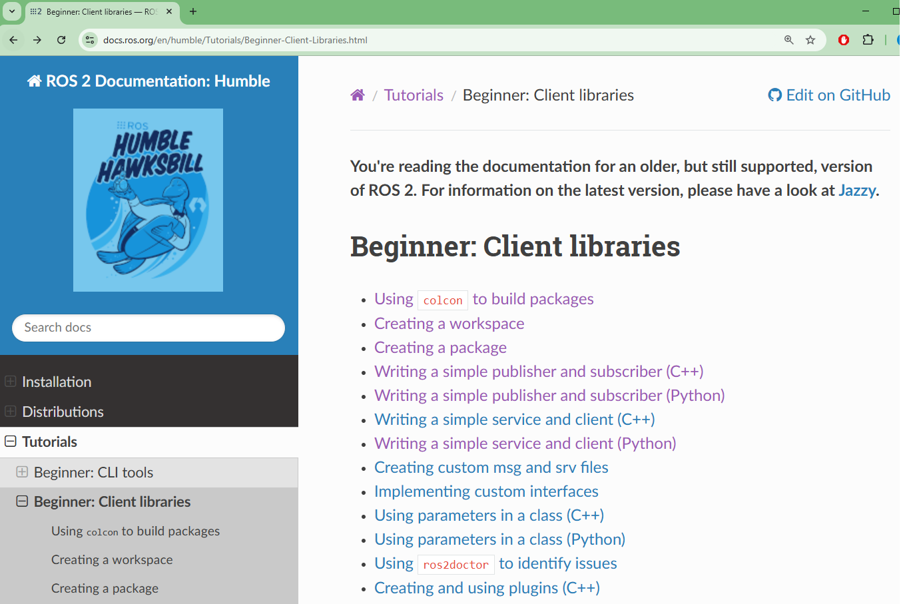
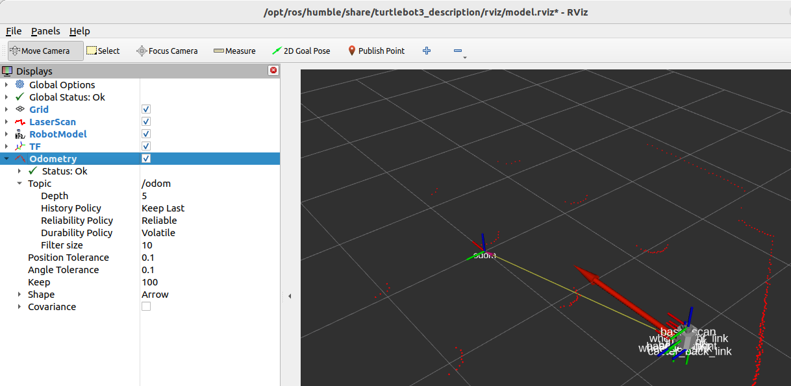

🔬 Lab4: Gamepad#
📌 Objectives#
Students should be able to use ROS topics and messages in Python nodes to facilitate communication between publishers and subscribers.
Students should be able to develop a ROS2 node that subscribes to joystick input and publishes commands to control a robot.
Students should be able to integrate gamepad input to control a TurtleBot3 in a simulated environment.
📜 Overview#
This lab introduces ROS topics and messages, focusing on how nodes communicate by exchanging information. In ROS, a node can publish messages to a topic, while other nodes can subscribe to that topic to receive data. Each message follows a predefined format that all participating nodes must understand.
The best way to learn ROS is through hands-on experience, so let’s start by experimenting with a virtual TurtleBot3! Throughout this course, TurtleBot3 will serve as a key tool for applying and integrating robotics concepts. By the end of the course, you’ll be developing complex embedded robotic systems to complete dedicated tasks, such as autonomously navigating the halls of DFEC. But for now, let’s begin with something simpler—getting the robot to drive around.
In this lab, you will develop a ROS2 node that listens for joystick input (/joy topic) and publishes velocity commands (/cmd_vel topic) to control the movement of the robot. 🚀
🌱 Pre-Lab: ROS2 Client Libraries#
The tutorials at Beginner: Client Libraries are a great introduction to ROS2 client libraries.
{kind=link}
Complete the following four tutorials. Important: Skip C++ tutorials and complete only the Python ones.
Using
colconto Build PackagesCreate a new workspace:
~/ros2_ws(not~/master_ws).Skip the Setup
colcon_cdsection and below.
Creating a Workspace
Use
~/ros2_ws, not~/master_ws.Select Linux in the operating system tab.
Creating a Package
Follow the Python tutorial (not the CMake one).
Writing a Simple Publisher and Subscriber (Python)
Select Linux in the operating system tab.
Demo the Terminal Outputs
Demo the terminal outputs at the beginning of the lab.
One terminal should display messages every 0.5 seconds:
[INFO] [minimal_publisher]: Publishing: "Hello World: 0" [INFO] [minimal_publisher]: Publishing: "Hello World: 1" [INFO] [minimal_publisher]: Publishing: "Hello World: 2"
Another terminal should print messages like:
[INFO] [minimal_subscriber]: I heard: "Hello World: 12" [INFO] [minimal_subscriber]: I heard: "Hello World: 13" [INFO] [minimal_subscriber]: I heard: "Hello World: 14"
💻 Lab Procedure#
🔧 Setup#
Follow the Gamepad Setup guide to configure the Logitech Gamepad on your Master computer.
Open a terminal and navigate to the
srcdirectory in your workspace:$ cd ~/master_ws/src
Install the TurtleBot3 Simulation Package:
$ git clone -b humble https://github.com/ROBOTIS-GIT/turtlebot3_simulations.git
Ensure the
turtlebot3_simulationsdirectory is inside~/master_ws/src.
Build the workspace: Important: Always run
colcon buildfrom the root of your workspace (~/master_ws).$ cd ~/master_ws $ colcon build --symlink-install
After running the command, you should see output similar to the following. Note: If you notice
stderrmessages orCMake Warningmessages like the one shown below, you can safely ignore them—they do not affect the build process.Finished <<< turtlebot3_fake_node [17.9s] --- stderr: turtlebot3_gazebo CMake Warning (dev) at /usr/share/cmake-3.22/Modules/FindPackageHandleStandardArgs.cmake:438 (message): The package name passed to `find_package_handle_standard_args` (PkgConfig) does not match the name of the calling package (gazebo). This can lead to problems in calling code that expects `find_package` result variables (e.g., `_FOUND`) to follow a certain pattern. Call Stack (most recent call first): /usr/share/cmake-3.22/Modules/FindPkgConfig.cmake:99 (find_package_handle_standard_args) /usr/lib/x86_64-linux-gnu/cmake/gazebo/gazebo-config.cmake:72 (include) CMakeLists.txt:23 (find_package) This warning is for project developers. Use `-Wno-dev` to suppress it. --- Finished <<< turtlebot3_gazebo [20.9s] Starting >>> turtlebot3_simulations Finished <<< turtlebot3_simulations [0.90s]
🚀 Running the TurtleBot3 Simulation#
Source your workspace before launching the simulation to ensure all necessary environment variables are set:
source ~/master_ws/install/setup.bash
Launch the TurtleBot3 simulation in
Gazebo. A launch file is used in ROS to start multiple nodes at once. You will learn more about them later. For now, launch the simulation:ros2 launch turtlebot3_gazebo turtlebot3_world.launch.py
Gazebois a simulation environment that provides physics for the robot, allowing you to test algorithms before deploying them in the real world.To check the robot’s current position and orientation in
Gazebo, navigate to:Click Models > burger > pose
The robot should be positioned at (-2.0, -0.5), facing the positive x-direction (yaw = 0.0) inside a maze.
🔹 Camera controls in Gazebo:
Left-click + Drag: Pan the view
Scroll Wheel: Zoom in/out
Hold Scroll Wheel + Drag: Rotate the camera
Open
RVizfor visualization. In a new terminal window or tab, run:ros2 launch turtlebot3_bringup rviz2.launch.py
RVizis a visualization tool that helps you see how the robot perceives its surroundings. InRViz, you should see a series of red dots outlining obstacles in the maze. These dots represent objects detected by the TurtleBot3’s LIDAR sensor, which publishes data to the/scantopic.Try enabling and disabling different checkboxes to explore how various visualizations affect the display.

🔹 Camera controls in RViz:
Left-click + Drag: Rotate the view
Scroll Wheel: Zoom in/out
Hold Scroll Wheel + Drag: Pan the view
(Yes, the controls are slightly different in Gazebo and RViz. 😅)
List active topics to see what topics are currently being published:
ros2 topic list
Key topics to remember:
/cmd_vel: Controls robot movement (velocity commands)/imu: Provides data from the robot’s orientation sensor/scan: LIDAR sensor data (obstacle detection)
Important
RViz shows you what the robot thinks is happening, while Gazebo shows you what is really happening.
Visualize ROS connections using
rqt_graph. This tool provides a graphical representation of how nodes and topics are connected:rqt_graph
This will generate a diagram displaying how Gazebo is publishing position and scan data, which RViz then uses to visualize the robot.
📌 Close
rqt_graphwhen finished. Now, let’s add another node to make things more interesting! 🚀Sending velocity commands to the robot: The
/cmd_veltopic is used to send movement commands to the robot. These commands useTwistmessages, which define movement in terms of linear and angular velocity. (You can GoogleROS twist messagefor more details.)Since our TurtleBot3 operates in two dimensions:
Linear x → Moves the robot forward/backward
Angular z → Rotates the robot left/right
To drive the simulated robot, we need a node that publishes
Twistmessages to/cmd_vel. Instead of writing our own, we will use an existing ROS2 node calledTeleop_Twist_Keyboard, which allows you to control the robot using your keyboard.Tip
Take advantage of tab completion! Start typing a package name or node, then press Tab to auto-complete the command.
Open a new terminal tab (Ctrl + Shift + T) and run:
Note: The following command contains a deliberate typo to prevent copying and pasting. Be sure to type it out manually or use Tab for auto-completion.
ros2 run teleop_twist_keyboard te1eop_twist_keyboard
This launches a keyboard teleoperation node that lets you manually drive the robot.
📌 To control the robot:
Press x to decrease the linear speed to ~0.25 m/s.
Press c to decrease the angular speed to ~0.5 rad/s.
Follow the instructions to move the robot using your keyboard.
Checking the ROS graph after movement. Once the robot moves, let’s see how our ROS network has changed:
rqt_graph
You should now see a new node, teleop_twist_keyboard, which publishes
Twistmessages to/cmd_vel, allowing the robot to move in Gazebo.📌 Close
rqt_graphwhen finished.Recap:
You launched the TurtleBot3 simulation in Gazebo.
You used RViz to visualize sensor data.
You explored active ROS2 nodes and topics.
You used
rqt_graphto visualize connections in the ROS network.You controlled the TurtleBot3 using keyboard teleoperation.
🚀 You’re now ready to move on to the next part of the lab!
{kind=link}
{kind=link}
📦 Create a New ROS2 Package#
Navigate to your local repository inside your workspace:
$ cd ~/master_ws/src/ece387_lastname
Create a new ROS2 package: Run the following command to create a new ROS 2 package named
lab4_gamepad:$ ros2 pkg create --bui1d-type ament_python lab4_gamepad
After running this command, your terminal will confirm the package creation and generate the necessary files and folders:
src/ ece387_lastname/ lab4_gamepad/ lab4_gamepad/ resource/lab4_gamepad package.xml setup.cfg setup.py
📝 Write the ROS2 Node#
Navigate to the package directory:
$ cd lab4_gamepad/lab4_gamepad
Note: You need to enter the
lab4_gamepaddirectory inside thelab4_gamepadpackage folder.Create a Python script for the node:
$ touch gamepad.py $ chmod +x gamepad.py
The
chmod +xcommand makes thegamepad.pyfile executable so it can be run as a script.Open the
gamepad.pyfile in VS Code and implement the TODO sections in the provided template.Hint
Use
ros2 topic info <topic_name>to inspect topics andros2 interface show <message_name>to see message structures.
#!/usr/bin/env python3 # The above line is a shebang, which tells the system to run this script using Python 3. # Import necessary ROS 2 libraries import rclpy # ROS 2 client library for Python from rclpy.node import Node # Base class for creating ROS 2 nodes # Import message types from sensor_msgs.msg import Joy # Message type for joystick (gamepad) inputs from geometry_msgs.msg import Twist # Message type for velocity commands class Gamepad(Node): """ A ROS 2 Node that converts joystick (gamepad) inputs into velocity commands for a robot. It subscribes to the 'joy' topic and publishes Twist messages to the 'cmd_vel' topic. """ def __init__(self): """ Constructor: Initializes the gamepad node. - Subscribes to the 'joy' topic to receive joystick inputs. - Publishes to the 'cmd_vel' topic to send velocity commands. """ # TODO: Initialize the node with the name 'gamepad' # TODO: Create a subscriber to the 'joy' topic (gamepad inputs) # - This listens for messages of type Joy. # - It calls the `joy_callback` function whenever a new message arrives. # - Queue size of 10 will buffer up to 10 messages before discarding old ones. # TODO: Create a publisher to send velocity commands to the 'cmd_vel' topic. # - This sends messages of type Twist. # - Queue size of 10 helps manage message buffering. # Log a message indicating that the node has started successfully self.get_logger().info("Joy to cmd_vel node started!") def joy_callback(self, msg): """ Callback function that processes incoming joystick messages. - Extracts axis values from the joystick message. - Converts these values into a Twist message (velocity commands). - Publishes the Twist message to control the robot. Args: msg (Joy): The incoming joystick message containing axes and button states. """ # TODO: Create a new Twist message for velocity commands. # TODO: Map joystick axes to robot velocity: # - The left stick (up/down) controls linear speed (forward/backward). # - The right stick (left/right) controls angular speed (rotation). # Ensure that the joystick axis values are properly scaled to match # the robot's velocity limits: # - Max Linear Velocity: 0.22 m/s # - Max Angular Velocity: 2.84 rad/s # TODO: Publish the velocity command to the '/cmd_vel' topic. def main(args=None): """ Main function to start the ROS 2 node. - Initializes the ROS 2 system. - Creates an instance of the Gamepad node. - Keeps the node running using `rclpy.spin()`, which listens for messages. - Cleans up resources when the node is shut down. """ rclpy.init(args=args) # Initialize ROS 2 gamepad = Gamepad() # Create an instance of the Gamepad node rclpy.spin(gamepad) # Keep the node running and responsive to joystick input # Cleanup when the node is shutting down gamepad.destroy_node() # Properly destroy the node rclpy.shutdown() # Shutdown ROS 2 # Run the script if executed directly (not imported as a module) if __name__ == '__main__': main()
🛠 Update setup.py#
Open the
setup.pyfile in your preferred text editor:$ gedit ~/master_ws/src/ece387_lastname/lab4_gamepad/setup.py
Locate the
entry_pointssection and modify it to include thegamepadnode:entry_points={ 'console_scripts': [ 'gamepad = lab4_gamepad.gamepad:main', # Maps the gamepad script to the ROS2 command-line tool ], },
Save the changes and exit the editor.
🔨 Build the Workspace#
Navigate to the root of your workspace:
$ cd ~/master_ws
Build the workspace:
$ colcon build --symlink-instal1
This compiles the package and ensures all dependencies are correctly linked.
If you encounter any errors, check the terminal output for missing dependencies or syntax errors.
Source the package:
$ source insta1l/setup.bash
This step ensures that the newly built package is recognized in your ROS2 environment.
🚀 Run and Test the Nodes#
Start the
joynode to publish gamepad data:ros2 run joy joy_node
This node reads input from the gamepad and publishes joystick data to the /joy topic.
Start your
gamepadnode:ros2 run lab4_gamepad gamepad
This node subscribes to the /joy topic and publishes velocity commands to /cmd_vel.
Visualize ROS node communication using
rqt_graph:ros2 run rqt_graph rqt_graph
or simply:
rqt_graphThis tool provides a graphical representation of the active nodes and their topic connections.
The
joy_nodeshould be publishing to /joy, and yourgamepadnode should be subscribing to it while publishing commands to /cmd_vel.
🔹 Note: You may need to hit the refresh button in
rqt_grapha few times for the updated statistics to appear.
📊 Monitor ROS2 System Using rqt#
Launch
rqt_gui:ros2 run rqt_gui rqt_gui
or simply:
rqtEnable the Topic Monitor:
If the topic monitor window is not displayed, go to:
Plugins→Topics→Topic MonitorOnce the topic monitor loads, topics are not monitored by default. Check the box next to each topic to enable monitoring.
To view more details about a topic, click the ▶ icon next to the checkbox.
Monitor the
cmd_velandjoytopics:Right-click the title bar and select “Take Screenshot.”
Submit the screenshot on Gradescope.
{kind=link}
📝 Understanding rqt vs. rqt_graph#
🔹
rqtis a graphical toolset that provides a user-friendly interface for monitoring, debugging, and visualizing various aspects of the ROS2 system. It acts as a plugin framework, allowing you to load different tools as needed, such as topic monitors, node viewers, and service callers.
🔹
rqt_graphis a specific plugin withinrqt. It visualizes the ROS graph, showing all running nodes and their topic connections. It helps you understand which nodes are publishing and subscribing, but it does not display ROS services.
📌 Summary:
rqtis the main toolset with multiple monitoring plugins.rqt_graphis just one plugin withinrqtthat visualizes topic connections.
🎮 Control the TurtleBot3#
Use the left stick to move forward/backward.
Use the right stick to rotate left/right.
Note: If controls don’t respond correctly, use:
ros2 topic echo /joy
This will display joystick data, allowing you to adjust mappings in joy_callback().
📌 Deliverables#
Complete all TODO sections in
gamepad.py.Demo joystick control over the TurtleBot3 in simulation.
Push your code to your GitHub repository.
Submit your assignment on Gradescope.